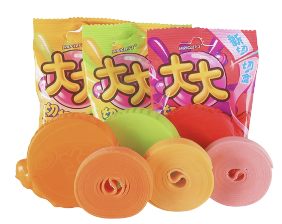

In 1989, the TaTa Bubble Gum came out in China. At first, it was just a regular square bubble gum. Then the “TaTa Roll” came out in 1993. In 2005, “TaTa Roll" innovated the bubble gum roll that could be cut off by its outer package. The roll was 1.2 meters long, and children could control the length of the bubble gum. Children loved this creative design. When I was a child, I enjoyed holding the TaTa Roll in my hand, opening the package quickly to make a click, pulling out the length I wanted, then using the package to cut the bubble gum and make a click. This process was very satisfying.
When I was in primary school, everyone in my class could blow bubbles successfully by eating the TaTa Bubble Gum. We often competed to blow bubble gum and compared who blew the biggest bubble. I remember a boy in my class who was very good at blowing bubbles, he once blew a bubble that was bigger than his face, and the bubble burst and stuck to his face. We laughed at him all day.
TaTa Bubble Gum was not only popular among children, but it was also a good helper for cashiers. When cashiers couldn't make a change, they often gave consumers some bubble gums instead of change. As a kid, I even wanted the cashier to give me some bubble gums rather than money. However, there are more types of snacks now, so the TaTa Bubble Gum is no longer the most popular product. People use mobile phones to pay, which makes TaTa Bubble Gum have no chance to appear. Speaking of which, I haven't eaten bubble gum for a long time, I wonder if I can still blow big bubbles now?
